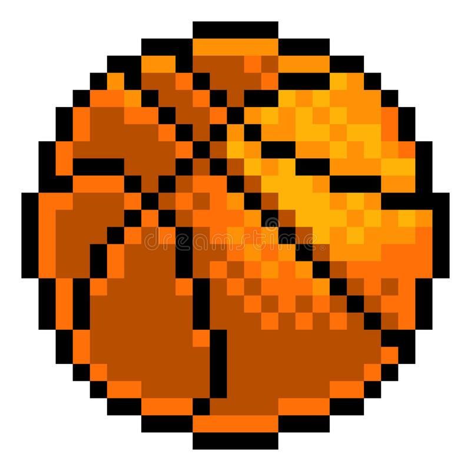

Vous découvrirez ici, au travers de ce blog mes 2 passions.
Jeux Video
Ma plus grande passion correspond au jeux vidéo. Joueur PC et sur console (PS5 et Xbox Series X), j'aime le côté compétitif du jeu en ligne. Bien au delà de l'aspect divertissement j'apprécie le côté rigueur et persévérant qu'un jeu demande au joueur derrière son écran. Je reste avant tout un grand fan de graphisme et de scénarios, c'est pourquoi je privilégie les jeux possédant un design level soigné ou un scénario qui marque tout une génération de gamer.
Sport
Mon autre passion concerne le côté sportif. Joueur de basket en championnat pré-national depuis que je suis jeune, le sport est pour moi une passion qui permet de dépasser ses limites aussi bien physique que psychologique. Je pratique depuis bientôt 6 ans la musculation, sport qui m'a permis de passer un nouveau cap sur le plan physique mais surtout au niveau de mon mindset, me montrant qu'aucune limite n'existe à part celle que l'on se fixe soi-même.

2e section
Dans cette section vous trouverez des articles en lien avec mes passions : les jeux video et le sport.
News PS5 & PS4
Mais où en sont les stocks de PlayStation 5 ? Difficile de répondre à cette question tant les réassorts sont rares. En attendant, sachez que vous pouvez télécharger gratuitement et garder à vie le jeu Ratchet & Clank sur PS4 et PS5
Annulation des championnats amateurs
La Fédération française de basket-ball a décidé d'arrêter définitivement les championnats amateurs en raison de la crise sanitaire. Un plan d'aides de 12 millions d'euros a été mis en oeuvre.
Xbox Game Pass
Aujourd’hui, le Xbox Game Pass permet de jouer à plus de 370 jeux sur console, 250 sur PC et 225 dans le cloud via le streaming sur son mobile. L’année dernière, le patron de la division Xbox, Phil Spencer, rappelait que Microsoft n’avait pas vocation à transformer tous les joueurs en abonnés au Game Pass, et que le service resterait une option parmi d’autres pour jouer à ses jeux.
 Aujourd’hui, le Xbox Game Pass permet de jouer à plus de 370 jeux sur console, 250 sur PC et 225 dans le cloud via le streaming sur son mobile. L’année dernière, le patron de la division Xbox, Phil Spencer, rappelait que Microsoft n’avait pas vocation à transformer tous les joueurs en abonnés au Game Pass, et que le service resterait une option parmi d’autres pour jouer à ses jeux.
Aujourd’hui, le Xbox Game Pass permet de jouer à plus de 370 jeux sur console, 250 sur PC et 225 dans le cloud via le streaming sur son mobile. L’année dernière, le patron de la division Xbox, Phil Spencer, rappelait que Microsoft n’avait pas vocation à transformer tous les joueurs en abonnés au Game Pass, et que le service resterait une option parmi d’autres pour jouer à ses jeux.